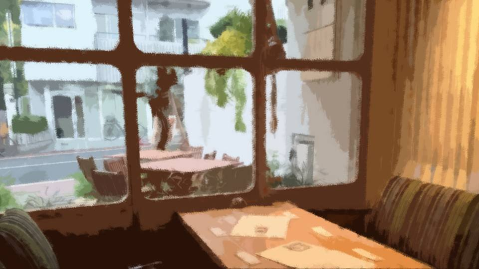
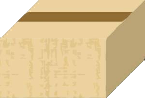

Dream


"A p-proposal!?"
"Yeah... he asked me yesterday... I finally found someone I can become a family with."
"Haaah. The day after you met him...? You really are extreme... Then again, Eiichiro-san's pretty extreme too, or something..."
At this sudden turn of events, Akane looked exasperated.
But that face, too, gradually brightened into one of glee.
"Yeah... he asked me yesterday... I finally found someone I can become a family with."
"Haaah. The day after you met him...? You really are extreme... Then again, Eiichiro-san's pretty extreme too, or something..."
At this sudden turn of events, Akane looked exasperated.
But that face, too, gradually brightened into one of glee.

"Well, isn't that great, finding a good man! Congratulations, Mifuyu!"
"Yeah! It's all thanks to you, Akane!"
"No, no... even so, I never expected things to move this fast... In that case, you'll be going to Eiichiro-san's family home to pay your respects soon, right?"
"Yeah, I'm going next week. I won't be back for about a year, though."
"Yeah! It's all thanks to you, Akane!"
"No, no... even so, I never expected things to move this fast... In that case, you'll be going to Eiichiro-san's family home to pay your respects soon, right?"
"Yeah, I'm going next week. I won't be back for about a year, though."
"Huh!? Wh-what's that supposed to mean...!"
"Eiichiro-san's family home is a small settlement out in the countryside, and apparently it has some pretty unusual customs. Anyone who wants to marry in gets tested there for a year, or something."
"Ehh... Are you really going to be okay? A year!? A settlement like that sounds pretty shady..."
"Eiichiro-san's family home is a small settlement out in the countryside, and apparently it has some pretty unusual customs. Anyone who wants to marry in gets tested there for a year, or something."
"Ehh... Are you really going to be okay? A year!? A settlement like that sounds pretty shady..."
"But if that's what it takes to be with Eiichiro-san, I don't think it's that big a deal...
And it looks like they'll approve my leave from work."
"Haaah. You really are extreme... But if you really are going, you absolutely can't push yourself too hard, okay? Mifuyu, you may be timid, but you tend to push yourself way too hard..."
"I know. But I'll be fine. Even so, Eiichiro-san and I..."
Having said that much, I noticed I was grinning.
"Haaah. You really are extreme... But if you really are going, you absolutely can't push yourself too hard, okay? Mifuyu, you may be timid, but you tend to push yourself way too hard..."
"I know. But I'll be fine. Even so, Eiichiro-san and I..."
Having said that much, I noticed I was grinning.
"You're the very picture of a girl in love...
Well, it's a good chance, so why not let them whip you into shape, body and soul? However it turns out, you'll probably grow from it, Mifuyu.
But don't you dare push yourself too hard, okay? If anything happens, get in touch with me right away!"
"Okay! Thank you!"
"Okay! Thank you!"
"In that case, I'll have to postpone my wedding..."
"Huh!? Why, why!?"
"Huh!? Why, why!?"
"Mifuyu not coming to my wedding? That's out of the question. I absolutely want Mifuyu there!"
"Oh no, I can't let you do that..."
"It's fine, it's fine! We're not at the point where there's a cancellation fee yet, and it's not like we're in a hurry."
"Uugh... I'm sorry..."
"This is me and Mifuyu we're talking about, isn't it? Don't be so weirdly reserved!"
"Oh no, I can't let you do that..."
"It's fine, it's fine! We're not at the point where there's a cancellation fee yet, and it's not like we're in a hurry."
"Uugh... I'm sorry..."
"This is me and Mifuyu we're talking about, isn't it? Don't be so weirdly reserved!"
―The following week, I headed for the Arata settlement, where Eiichiro-san's family home was.

The settlement itself was a little insular, and sure enough, it had a lot of unusual customs.
But the one called the Grand Witch, Eiichiro-san's mother, was a very friendly and kind person, and everyone else there was nice too.
But the tests themselves were harsh, and several times I felt my life was in danger.
But the one called the Grand Witch, Eiichiro-san's mother, was a very friendly and kind person, and everyone else there was nice too.
But the tests themselves were harsh, and several times I felt my life was in danger.

Apparently, since the Arata settlement is so rich in nature that meat and plants can be had in abundance, over several hundred years tyrannical daimyo and bandits had set their sights on the land of Arata and come to attack it.
That was why a custom of keeping everyone ready to fight at all times, and able to survive any situation, still remains today.
That was why a custom of keeping everyone ready to fight at all times, and able to survive any situation, still remains today.

Now, in modern times with no more raids like that, the main intent seems to be testing whether you truly mean to become one of the people of the Arata settlement.
I was warned in no uncertain terms never to speak of what the tests involve, so I will probably never tell even Akane about this.
I was warned in no uncertain terms never to speak of what the tests involve, so I will probably never tell even Akane about this.
Not once did I think of giving up or running away.
If I got through all this, I could be with Eiichiro-san.
That alone was enough to spur me on.
If I got through all this, I could be with Eiichiro-san.
That alone was enough to spur me on.
―And so four seasons passed, and then―
"Akane, I'm home!"
"Mifuyu...! W-welcome back!"
Akane and I were reunited after a year.
I had passed every test and come back to Motoki-cho.
"Mifuyu...! W-welcome back!"
Akane and I were reunited after a year.
I had passed every test and come back to Motoki-cho.
"It's been a while, Akane!"
"You... are you really Mifuyu?"
"Huh?"
"Your face looks totally different... Mifuyu was more, I don't know, helpless, or clingy... The way you carry yourself has gotten really tough!"
"You think so...? I don't feel like I've changed..."
"Huh?"
"Your face looks totally different... Mifuyu was more, I don't know, helpless, or clingy... The way you carry yourself has gotten really tough!"
"You think so...? I don't feel like I've changed..."
"It's like you've lost what made you Mifuyu..."
"Uugh... that's mean..."
"Uugh... that's mean..."
"............
Pfft-heh!
With that verbal tic, it's Mifuyu, all right!"
"Uugh... that's even meaner..."
I don't think I've changed all that much myself.
It's not as if I've gotten strong enough to trade punches with a man, or so enlightened I could found a religion.
"Uugh... that's even meaner..."
I don't think I've changed all that much myself.
It's not as if I've gotten strong enough to trade punches with a man, or so enlightened I could found a religion.
"Mifuyu, are you going to live in the Arata settlement after all?"
"No, we're going to live in Motoki-cho. For me and for Eiichiro-san both, this is where we belong right now!"
"I see... Thank goodness... I was so lonely..."
"No, we're going to live in Motoki-cho. For me and for Eiichiro-san both, this is where we belong right now!"
"I see... Thank goodness... I was so lonely..."
"Mifuyu! I really missed you, and I was so worried!
Did you really not push yourself too hard!? No lasting after-effects anywhere!? Nobody bullied you!?"
"W-wait, Akane... I'm fine. The tests were tough, but the people in the settlement were all really nice. And the food was so good! Oh, right, right! I've got a present for you, Akane!"
"W-wait, Akane... I'm fine. The tests were tough, but the people in the settlement were all really nice. And the food was so good! Oh, right, right! I've got a present for you, Akane!"

I set a box big enough to fill my arms on the table.
"............?"
"This is a giant bullfrog you can only get in Arata! I caught it and butchered it myself! It's a nice fat one from right before hibernation, so it's in season now!"
"A-a frog...!? Ah, ahaha... Th-thank you..."
"This is a giant bullfrog you can only get in Arata! I caught it and butchered it myself! It's a nice fat one from right before hibernation, so it's in season now!"
"A-a frog...!? Ah, ahaha... Th-thank you..."
"I was surprised too when I first heard it was a frog, but when I ate it, I was surprised all over again!
If you eat it when you're feeling unwell, you get your energy back right away!
In Arata, people catch animals by hunting and so on, and then they kill them, skin them and butcher them all themselves.
Oh, but maybe you don't know how to eat this, Akane? Want me to open it up a little and explain?"
"Nonono, it's fine! You don't have to open it!
Putting raw meat on a restaurant table isn't sanitary, is it!?"
"Oh, I guess so... You're right."
"Oh, I guess so... You're right."
"You really have gotten strong, Mifuyu.
Mifuyu, it looks like you've already broken free of depending on me."
"That's not true... Even with Eiichiro-san, if it weren't for you, Akane..."
"But you thought you could stand on your own once you found a family, didn't you? Right now, Mifuyu, you're already standing on your own two feet just fine."
"Uugh... I'm not as admirable as all that... From now on too, if anything happens, I might go running straight to you for help, Akane..."
"That's not true... Even with Eiichiro-san, if it weren't for you, Akane..."
"But you thought you could stand on your own once you found a family, didn't you? Right now, Mifuyu, you're already standing on your own two feet just fine."
"Uugh... I'm not as admirable as all that... From now on too, if anything happens, I might go running straight to you for help, Akane..."
"Well, I don't mind you relying on me.
But don't hold back, okay? If you're ever in trouble, Mifuyu, I'll help you, no matter what. Absolutely."
"Okay, thank you... Oh, but if you're ever in trouble, Akane, I'll help you too! Just tell me, anything!"
"Mifuyu saying something like that... Heh, you really have gotten tough..."
"Okay, thank you... Oh, but if you're ever in trouble, Akane, I'll help you too! Just tell me, anything!"
"Mifuyu saying something like that... Heh, you really have gotten tough..."
"But there are still things I'm anxious about...
I really do want Eiichiro-san's child, and whether I can be a proper mother..."
"Everybody's a beginner at that kind of thing at first, so why not just get used to it a little at a time?"
"Everybody's a beginner at that kind of thing at first, so why not just get used to it a little at a time?"
"Well... I guess that's true. Now that it's come this far, it's better to look forward to it than to worry, right?
Akane, what about you and kids?"
"Kids, huh... While I'm at it, wouldn't it be fun if mine were the same age as yours, Mifuyu?"
"Oh, that's a great idea! If they were friends from birth like us, I'd be happy too!"
"Kids, huh... While I'm at it, wouldn't it be fun if mine were the same age as yours, Mifuyu?"
"Oh, that's a great idea! If they were friends from birth like us, I'd be happy too!"
After that, we got really excited talking about kids.
If we had a boy and a girl, should we have them marry?
What should we name them?
If we had a boy and a girl, should we have them marry?
What should we name them?
Back then, we joked around about how a girl born in spring would be 'Haruka,'
a girl born in summer would be 'Natsumi,'
and so on.
And then, with Akane as autumn and me as winter, we'd have spring, summer, autumn and winter all together. [TN: Haru means spring, natsu summer, fuyu winter.]
And how, if that happened, parents and kids together could form a comedy quartet called Four Seasons.
And then, with Akane as autumn and me as winter, we'd have spring, summer, autumn and winter all together. [TN: Haru means spring, natsu summer, fuyu winter.]
And how, if that happened, parents and kids together could form a comedy quartet called Four Seasons.
Having kids means your family grows.
We talked about plenty of things half in jest, but even so, it was more than enough to make our dreams for the future swell.
We talked about plenty of things half in jest, but even so, it was more than enough to make our dreams for the future swell.
―A few months later, we got married at almost the same time.

"You're expecting."
A few months after we married, the doctor told me so.
"Really...! Is my family really going to grow!?"
"Yes, so please take good care of yourself. Your body isn't only yours anymore."
A few months after we married, the doctor told me so.
"Really...! Is my family really going to grow!?"
"Yes, so please take good care of yourself. Your body isn't only yours anymore."
Eiichiro-san's child was growing inside me.
Even though I was in front of the doctor, I wept with joy.
Even though I was in front of the doctor, I wept with joy.


"Is it true!? We did it, Mifuyu-chan!"
"I'm so happy! When I think your baby's in here, Eiichiro-san... Oh, I'm so happy I think I'm going to lose my mind!"
Then Eiichiro-san knelt on the floor and gently stroked my belly.
"I'm so happy! When I think your baby's in here, Eiichiro-san... Oh, I'm so happy I think I'm going to lose my mind!"
Then Eiichiro-san knelt on the floor and gently stroked my belly.

"Hello there, how are you doing?
Dad and Mom are both looking forward to you being born!"
"I see... I'm going to be a mom..."
"I see... I'm going to be a mom..."

"Mifuyu-chan...
I... I...
Nnngh...!"
Eiichiro-san let out a groaning sob.
Eiichiro-san let out a groaning sob.
"Oh my, oh my, Daddy's a widdle cwybaby, isn't he! Who's gonna cwy more, him or you?"
The shape of family I had pictured was steadily becoming real.
The shape of family I had pictured was steadily becoming real.
"Really!? Congratulations!"
Akane was just as happy for me.
She was the one who knew better than anyone how much I had longed for a family.
Just then, the usual server came to take our order.
Akane was just as happy for me.
She was the one who knew better than anyone how much I had longed for a family.
Just then, the usual server came to take our order.
"Kogori-sama, Niimura-sama, congratulations on your happy news.
Today we've prepared caffeine-free drinks for you. These are on the house."
The server set the drinks and a lavish afternoon tea set on the table.
The server set the drinks and a lavish afternoon tea set on the table.
"Huh? Akane, you got the same drink as me?"
Akane had a caffeine-free drink set in front of her too.
"Yeah... this is kind of awkward to bring up right now, but... the truth is..."
Akane said that and stroked her belly.
"Don't tell me..."
Then Akane gave me a big smile.
Akane had a caffeine-free drink set in front of her too.
"Yeah... this is kind of awkward to bring up right now, but... the truth is..."
Akane said that and stroked her belly.
"Don't tell me..."
Then Akane gave me a big smile.
"Yeah... me too."
"What!? R-r-really!?"
Can you believe it! Akane's family was getting one more member too.
"What!? R-r-really!?"
Can you believe it! Akane's family was getting one more member too.
"Ah, ahaha! Oh, come on...! What is this...
I don't even know what's going on anymore...!
So things like this actually happen!"
"Now our kids will be in the same grade. I hope they'll be as close as we are..."
Just then, a woman who seemed to be a mother came in with a little girl.
"Now our kids will be in the same grade. I hope they'll be as close as we are..."
Just then, a woman who seemed to be a mother came in with a little girl.

"Mommy! Baby sister, wan' one!
Momoko wan' a baby sister!"
The girl was still toddling, maybe around one or two years old.
She talked awfully well for how little she looked.
"Momoko, we'll talk about that later, okay?"
"No! Baby sister, wan' one! Picked a name! Name's Erina! Cute name!"
The girl was still toddling, maybe around one or two years old.
She talked awfully well for how little she looked.
"Momoko, we'll talk about that later, okay?"
"No! Baby sister, wan' one! Picked a name! Name's Erina! Cute name!"
"All right, all right... Later, okay?"
"Really!? Baby sister, coming!? Yaaay! Erina's coming!"
"Hey, Momoko...! Don't say that so loud...! If you stay quiet in this shop, I'm sure she'll come."
"Okaaay! Momoko be quiet!"
The mother and daughter headed to a table in the back.
"Really!? Baby sister, coming!? Yaaay! Erina's coming!"
"Hey, Momoko...! Don't say that so loud...! If you stay quiet in this shop, I'm sure she'll come."
"Okaaay! Momoko be quiet!"
The mother and daughter headed to a table in the back.
"She can talk like that when she's still so little... She must be a smart kid."
"Ehehe... What kind of kids will ours turn out to be?"
Akane was there for me, and that was how I was able to grab hold of happiness.
Being able to share that happiness made me happier than anything.
"Ehehe... What kind of kids will ours turn out to be?"
Akane was there for me, and that was how I was able to grab hold of happiness.
Being able to share that happiness made me happier than anything.
And, together with Akane, the one who brought me together with Eiichiro-san: Ryoji-san.
Eiichiro-san, too, I could never thank enough.
I had found the best people, and the greatest happiness.
Eiichiro-san, too, I could never thank enough.
I had found the best people, and the greatest happiness.
Read ✓ Next in this arc →